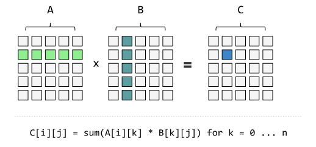

Math
Table of Contents
1 常数 e 的含义
维基百科对 e 的解释是：e 是自然对数的底数。对「自然对数」的解释是：自然对数是以 e 为底的对数函数，e 是一个无理数，约等于 2.718281828。这就构成了循环定义，完全没有说 e 是什么。数学家选择这样一个无理数作为底数，还号称这种对数很「自然」，它的真正含义是什么？
An Intuitive Guide To Exponential Functions & e 把这个问题解释得非常清楚，简单说， e 就是增长的极限。
假设有一种单细胞生物，每 24 小时分裂一次，即数量每天翻一倍，所以第 x 天的数量为：
$$\text{growth} = 2^x = (1 + 100\%)^x$$
其中 1 表示原有数量，100% 表示单位时间的增长率。
继续假设：每 12 小时，也就是分裂进行到一半的时候，新产生的半个细胞就可以再次分裂了。因此，一天 24 个小时可以分成两个阶段，每个阶段都在前一阶段的基础上增长 50%，所以一天之后的数量为：
$$\text{growth} = (1 + \frac{100\%}{2})^2 = 2.25$$
继续假设：细胞每 8 小时就具备独立分裂的能力，也就是将 1 天分成 3 个阶段，那么一天之后的数量为：
$$\text{growth} = (1 + \frac{100\%}{3})^3 = 2.37037\ldots$$
如果进一步假设，分裂是连续不断进行的，新生细胞每分每秒都具备继续分裂的能力，那么一天之后的细胞数量为：
$$\text{growth} = \lim\limits_{n \to \infty}{(1 + \frac{100\%}{n})^n} = 2.718281828 \ldots$$
因此，当增长率为 100% 时，在单位时间内最多只能得到 2.71828 个细胞，这个数就称为 e，它的含义是 单位时间内，持续的翻倍增长所能达到的极限值。这个值是自然增长的极限， 因此以 e 为底的对数，就叫做自然对数。
（对原文补充：）假设一个桶中有体积为 1 的液体，上方有一个水管在不停滴水，而滴水的速度始终保持在「如果持续滴水一天能够使水桶中的水体积翻倍」，那么一天之后水桶中的水体积就是 e。
有了 e，计算银行存款的复利就非常容易。假定有一家银行，年利率是 100%，（对原文补充：计息周期无限短，即不断按照年利率计算复利）存入 100 元，一年后余额为：
$$\lim\limits_{n \to \infty}{100 (1 + \frac{100\%}{n})^n = 100e = 271.828 \ldots}$$
但是实际生活中银行的利息没有这么高，如果利率只有 5%，那么 100 元存一年可以拿到多少钱呢？在 100% 利息率的情况下，n = 1000 时所得到的值已经非常接近 e：
$$(1 + \frac{100\%}{1000})^{1000} \approx e $$
那么在利率 5% 的情况下，取 n = 50：
$$(1 + \frac{5\%}{50})^{50} = [(1 + \frac{100\%}{1000})^{1000}]^{\frac{1}{20}} \approx e^{\frac{1}{20}}$$
$\frac{1}{20}$ 正好等于 5% 的利率，所以可以把公式改写成：
$$\text{growth} = e^{\text{r}}$$
r 表示增长率，这说明 e 可以用于任何增长率的计算，前提是它必须是持续不断的复合式增长。
再考虑时间因素，在时间 t 的情况下，通用公式就是：
$$\text{growth} = e^{rt}$$
继续上面的例子，如果利率是 5%，100 元存款翻倍需要多少时间？即：
$$100e^{0.05t} = 200$$
$$t = \frac{\ln{2}}{0.05} = \frac{0.693}{0.05} \approx \frac{72}{5}$$
即用 72 除以增长率，可以得到翻倍的大致时间，这就是 72 法则 的原理。
2 理解矩阵乘法
矩阵加减法就是相同位置的数字进行加减。
$$\begin{pmatrix} 2 & 1 \\ 4 & 3 \end{pmatrix} + \begin{pmatrix} 1 & 2 \\ 1 & 0 \end{pmatrix} = \begin{pmatrix} 3 & 3 \\ 5 & 3 \end{pmatrix}$$
矩阵乘以一个常数，就是所有位置的数字都乘以这个数。
$$2 \times \begin{pmatrix} 2 & 1 \\ 4 & 3 \end{pmatrix} = \begin{pmatrix} 4 & 2 \\ 8 & 6 \end{pmatrix}$$
矩阵乘法的规则就不一样了，结果矩阵第 \(m\) 行、第 \(n\) 列的值，等于第一个矩阵第 \(m\) 行与第二个矩阵第 \(n\) 列对应位置的每个值的乘积之和。

受到 Linear Algebra: What matrices actually are 的启发， 矩阵的本质就是线性方程，矩阵的最初目的，是为线性方程组提供简写形式。
$$\begin{cases} 2x + y = 3 \\ 4x + 3y =7 \end{cases}$$
可以简写为：
$$\begin{pmatrix} 2 & 1 \\ 4 & 3 \end{pmatrix} \begin{pmatrix} x \\ y \end{pmatrix} = \begin{pmatrix} 3 \\ 7 \end{pmatrix}$$
从这种书写规则可以推导出矩阵的乘法规则。假设有三组未知数 $x$、\(y\) 和 $z$， 已知 \(x\) 和 \(y\) 的关系：
$$\begin{cases} a_{11}x_1 + a_{12}x_2 = y_1 \\ a_{21}x_1 + a_{22}x_2 = y_2 \end{cases} \Rightarrow \begin{pmatrix} a_{11} & a_{12} \\ a_{21} & a_{22} \end{pmatrix} \begin{pmatrix} x_1 \\ x_2 \end{pmatrix} = \begin{pmatrix} y_1 \\ y_2 \end{pmatrix}$$
以及 \(x\) 和 \(z\) 的关系：
$$\begin{cases} b_{11}z_1 + b_{12}z_2 = x_1 \\ b_{21}z_1 + b_{22}z_2 = x_2 \end{cases} \Rightarrow \begin{pmatrix} b_{11} & b_{12} \\ b_{21} & b_{22} \end{pmatrix} \begin{pmatrix} z_1 \\ z_2 \end{pmatrix} = \begin{pmatrix} x_1 \\ x_2 \end{pmatrix}$$
求 \(y\) 和 \(z\) 的关系。从矩阵来看，只要把第二个矩阵代入第一个矩阵即可：
$$\begin{pmatrix} a_{11} & a_{12} \\ a_{21} & a_{22} \end{pmatrix} \begin{pmatrix} b_{11} & b_{12} \\ b_{21} & b_{22} \end{pmatrix} \begin{pmatrix} z_1 \\ z_2 \end{pmatrix} = \begin{pmatrix} y_1 \\ y_2 \end{pmatrix}$$
从方程组来看，也可以把第二个方程组代入第一个方程组：
$$\begin{cases} a_{11}(b_{11}z_1 + b_{12}z_2) + a_{12}(b_{21}z_1 + b_{22}z_2) = y_1 \\ a_{21}(b_{11}z_1 + b_{12}z_2) + a_{22}(b_{21}z_1 + b_{22}z_2) = y_2 \end{cases}$$
即：
$$\begin{cases} (a_{11}b_{11} + a_{12}b_{21})z_1 + (a_{11}b_{12} + a_{12}b_{22})z_2 = y_1 \\ (a_{21}b_{11} + a_{22}b_{21})z_1 + (a_{21}b_{12} + a_{22}b_{22})z_2 = y_2 \end{cases} \Rightarrow \begin{pmatrix} a_{11}b_{11} + a_{12}b_{21} & a_{11}b_{12} + a_{12}b_{22} \\ a_{21}b_{11} + a_{22}b_{21} & a_{21}b_{12} + a_{22}b_{22} \end{pmatrix} \begin{pmatrix} z_1 \\ z_2 \end{pmatrix} = \begin{pmatrix} y_1 \\ y_2 \end{pmatrix}$$
与带入矩阵的等式比较，就可以得到：
$$\begin{pmatrix} a_{11} & a_{12} \\ a_{21} & a_{22} \end{pmatrix} \begin{pmatrix} b_{11} & b_{12} \\ b_{21} & b_{22} \end{pmatrix} = \begin{pmatrix} a_{11}b_{11} + a_{12}b_{21} & a_{11}b_{12} + a_{12}b_{22} \\ a_{21}b_{11} + a_{22}b_{21} & a_{21}b_{12} + a_{22}b_{22} \end{pmatrix}$$